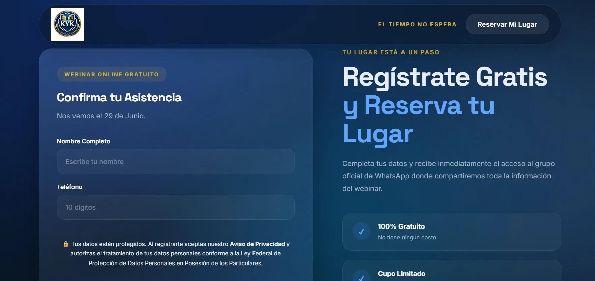
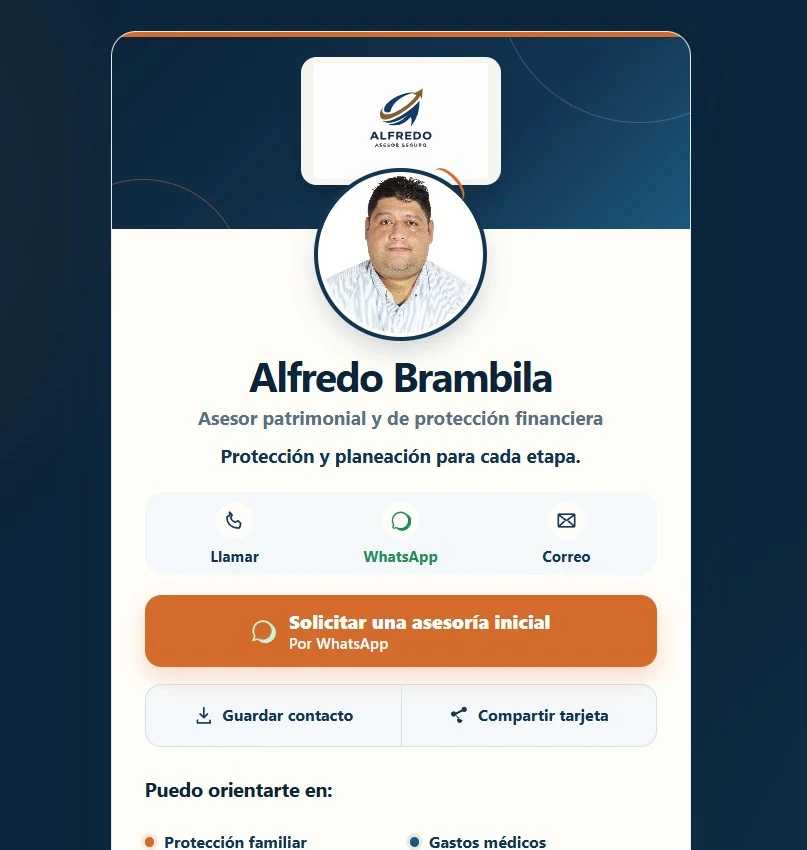
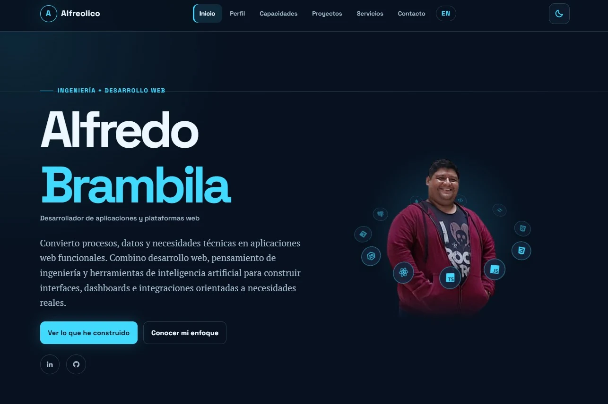

03 · Trabajo / campo de evidencia
Capacidad conectada.
Evidencia real.
Selecciona una capacidad para ver qué trabajo la sostiene. La ruta distingue lo aplicado de la exploración sin convertir aprendizaje en experiencia de cliente.
Nodo de commit
Ruta comprometida
Aplicaciones e interfaces
Interfaces, presencia digital y experiencias web construidas para una necesidad concreta.
Salida A · evidencia aplicada
Construido, activo o en desarrollo real



Salida B · lab / exploración
Práctica técnica sin presentarla como cliente